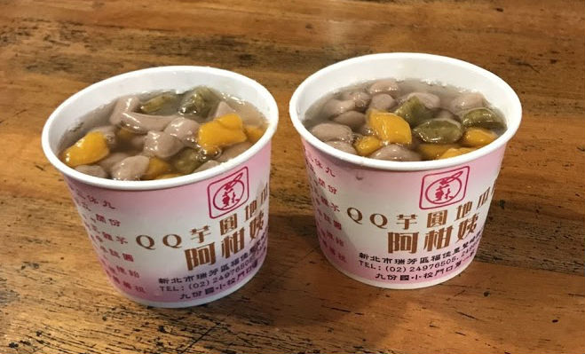
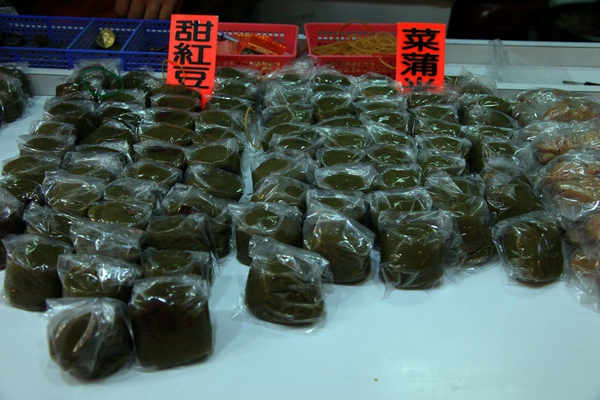
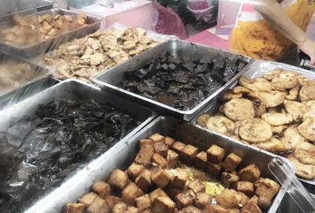
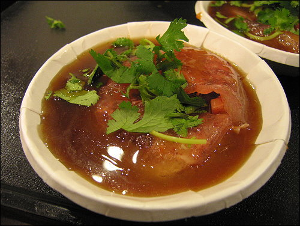
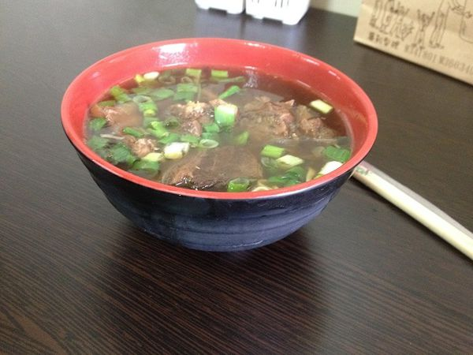
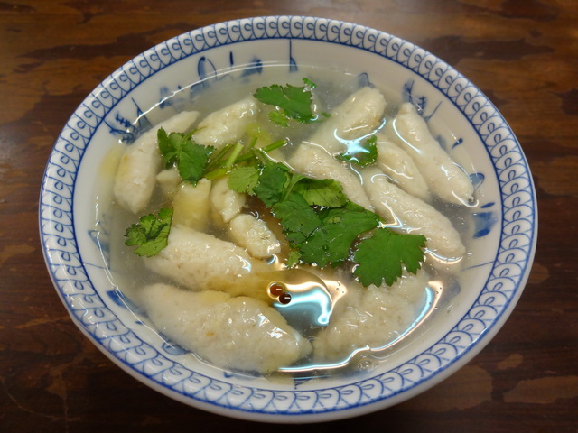

美食之旅
來九份就是為了芋圓，"阿柑姨芋圓"，九份的一家名店。
製作方法，不需添加防腐劑，只需將根莖薯類蒸熟後壓成泥，加入樹薯粉揉 成團，搓成塊狀，煮熟後即可搭配各式甜湯!
其實早期的芋圓主要是賣給當地居民採礦回來或者口渴時候吃的，
最先開始做芋圓的是阿柑姨，因為阿柑姨的先生是做礦工的，所以阿柑姨開了一家雜貨店，
順便賣芋圓冰，幫忙貼補家用。
吃起來很軟Q，配剉冰吃起來簡直完美，吃兩三碗也不會膩。

一種米製食品，在九份，阿蘭草仔粿，一家老粿店，非常有名。
而這食物因攙入可食用草類而得名。外型扁平約巴掌大小，內以蘿蔔切絲剁 碎為包餡，味道鹹，綠色外表，以香蕉葉、月桃葉等為墊。
有很多種口味，紅豆，酸菜，羅波絲等等。
外面吃起來軟軟的，有點像麻糬，裡面有包筍絲，會有點黏牙。

原來是由前國泰醫院護理長所監製的滷味店，以不加防腐劑、塑化劑等添加 物的健康宣言為號召，讓遊客買到最天然的產品回去，且一律30圓。
護理長的店的滷味真的是超好吃的，一開始想說是熱滷味，但並不是，他是
已經用好放在前面的盤子上，
你要什麼他搖一大匙放進袋子，而且，他外面的醬料實在是美
妙阿，微辣微辣的，吃起來爽口。

金枝紅糟肉圓，去九份一定要吃！原本紅糟肉圓並不是九份的名產，只是做給家裡吃的一樣東西， 但是因為友人非常推薦，所以九分才漸漸的開始飄起肉圓香。
紅糟肉圓是屬於炸肉圓，一般來說炸肉圓的皮會比清蒸肉圓來的Q很多，而金枝肉圓的皮真的很Q彈， 內餡只有單純的紅糟肉跟筍絲，肉質有勁再帶點紅麴的香味。
外面的皮超軟Q，而且裡面的紅麴肉配筍絲吃起來超香，料超多，淋在外面的醬料甜甜的，完全不膩，醬料美味到當時我喝完了。。。!

舊道口牛肉麵
它的湯喝起來帶有中藥香，入口後有些回甘，還不錯喝，尤其在冷冷的天，喝這種中藥香的熱湯很舒服。
麵條是那種陽春麵的Q度，而肉很嫩，嫩到有一點像滿漢全席那種泡麵附料理包的牛肉，其實是好吃的，不過就少了一點點的嚼勁，整體算不錯吃。

阿婆魚羹(阿雲麵店)
來到九份老街，第一間要吃的就是阿婆魚羹(阿雲麵店)，走古早味路線的開放式店面，在烹煮熱氣瀰漫下，頗有種溫暖的感覺。
這種圓形的魚丸，口感相較Q很多，滿有嚼勁的，好吃！而且麵條微Q，口感算不錯，而湯頭味道不會太重鹹，清清的還ok。
